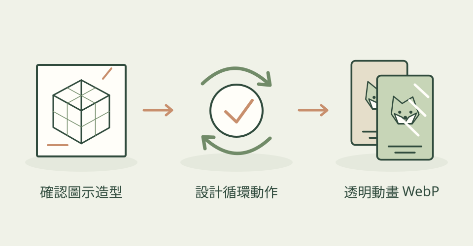

番茄鐘旁的小碼錶、獎勵畫面的寶箱，往往只需要一小段動作。3dicon 把造型確認、影片生成與逐幀去背串在一起，讓設計師取得可直接放進網頁或 App 的透明循環圖示。
它怎麼幫忙
先產生靜態圖，等你確認外形與配色；再確認要如何動，將同一張圖作為影片開頭與結尾，引導動作回到起點。最後逐格去背，保留柔和邊緣，打包成動畫 WebP。作者隨附的碼錶是實際示例，不是本站試跑成果。
功能快速理解

先確認立體風格圖示，再生成循環影片並逐格去背；本站功能示意，非模型檔或作者成品。
功能示意・本站繪製 放大查看可以這樣開口
這是一個可依需求修改的委託範例。
替番茄鐘 App 做一個鼠尾草綠、奶油白的小碼錶。先給我靜態造型，確認後讓指針轉動、身體輕晃，最後回到起點；交付透明動畫 WebP 與靜態後備圖。
適合什麼工作
適合 App、網頁、遊戲介面與品牌小動效的設計師或前端開發者，尤其是想用立體風格點綴介面的人。
開始之前
- 準備工具
- 可使用 Skill 的 coding agent、Python、相關套件、ffmpeg 與圖像／影片 API 憑證。README 主推 OpenRouter，提供其他供應者與備援路線；首次去背模型還需下載。
- 使用成本
- Skill 為 MIT；圖像與影片生成需付費 API，依所選模型、用量與重試計費，agent 費用另計。作者版本中的試跑估價不是今日報價或保證。本站沒有呼叫生成服務。
- 交付內容
- 透明動畫 WebP、靜態 PNG；MP4 路線會壓平背景
- 先留意
- 2026-10-26 首次收錄，專案建立與目前提交都在 9 月 23 日。由交付格式可知，3D 指視覺風格，並非交付可編輯 3D 模型。去背可能吃掉接觸陰影，動畫檔會隨幀數變大；產品端應搭配靜態圖支援減少動態偏好。不是精準角色表演或長片工具。
作者與來源
本文依作者公開說明整理，沒有實際執行這個專案。功能插圖由本站繪製，原作者範例另行標示；並非本站執行技能的測試結果。GitHub 星數為專案總量，觀察時間為 2026年10月26日 08:32（台北時間）。
首次收錄，尚無前次收藏量比較。